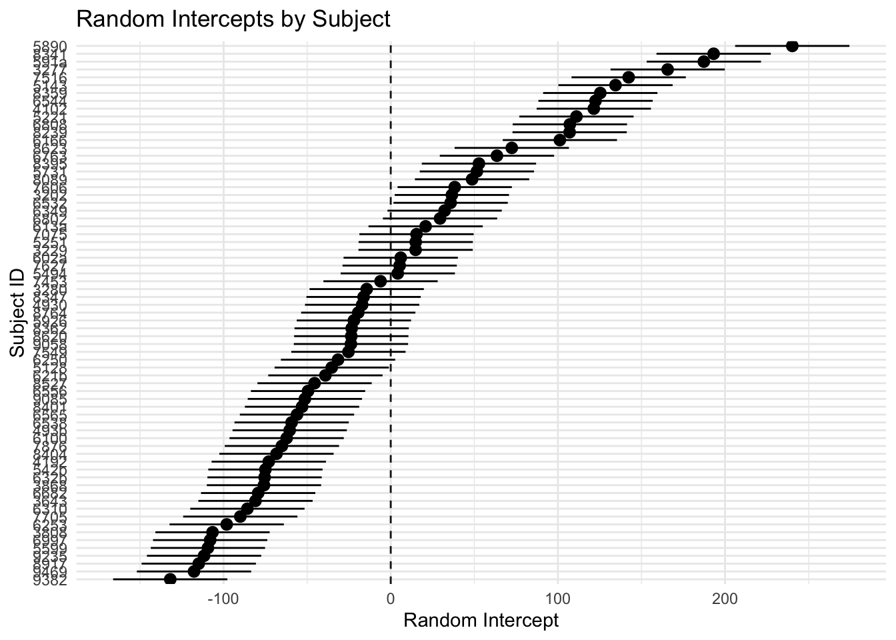
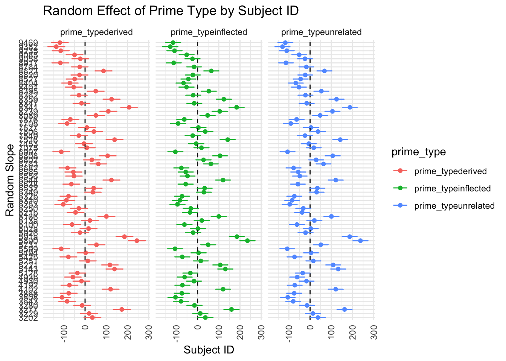

At their core, mixed-effects models “are extensions of regression in which data are structured in groups and coefficients can vary by group” (Gelman and Hill 2007: 237). Typical grouping structures found in linguistic data include speakers, regions, or lexical stimuli for which multiple observations are attested. Normally, such structures would violate the assumption of independence, but can be controlled for by capturing group-wise tendencies.
For illustration, a simple example of a hierarchical dataset is presented in Figure 23.1. If one were to, for instance, measure test scores for every student, it may be of interest how their performance varies not only from student to student but also from school to school. After all, the students are nested within their schools.
Read the following (partial) description of the experiments conducted by Ciaccio & Veríssimo on the morphological processing of complex lexical items (2022):
The experiment included 102 English monomorphemic verbs used as targets (e.g., print). These were preceded by their -ed past-tense form (e.g., printed) as the inflected prime, their -er nominalization (e.g., printer) as the derived prime, or by an unrelated prime. Unrelated primes were dis- similar in form and meaning from their corresponding targets; half of them were -ed inflected forms and half of them were -er derived words. The distributions of word-form frequency, lemma frequency, and length (in letters) of the three prime types were kept as similar as possible. (Ciaccio and Veríssimo 2022: 2267)
Inspect varmorph2 and characterise its multilevel structure.
23.3.1 Types of mixed-effects models
Variance across groups can be captured by varying-intercept and/or varying-slope models. These varying coefficients also known as random effects (cf. Gelman and Hill (2007): 245). In the model equation, the intercept \(\alpha\) and/or the slope \(\beta\) is additionally indexed for the grouping factor. Let \(J\) denote the number of groups for \(j = 1, ..., J\).
Varying-intercept model
We allow group-wise variation in the intercept by replacing \(\alpha\) with \(\alpha_{j}\) to indicate the intercept for the \(j\)-th group. It is defined as a random variable and follows the normal distribution. For instance, each participant in the aforementioned psycholinguistic would receive its own intercept rather than a global one for all participants.
We will allow group-wise variation in the slope coefficients by replacing them with \(\beta_{ij}\) to indicate the slope for the \(j\)-th group. The slope now functions as a random variable and is normally distributed. In the psycholinguistic study, each participant would be assigned its own slope coefficient.
The intraclass correlation coefficient (ICC) “ranges from \(0\) if the grouping conveys no information to \(1\) if all members of a group are identical” (Gelman and Hill 2007: 258). In other words, it indicates how much of the variance in the outcome can be explained by the grouping factor (e.g. school or participant).
Show the code
# Extract random effects and their standard errorsranef_obj <-ranef(varmorph.me) # Extract random effects with conditional variancese_ranef <- arm::se.ranef(varmorph.me) # Extract standard errors for random effects# Prepare a data frame for 'subj_id' random intercepts with confidence intervalssubj_ranef <- ranef_obj$subj_id # Random effects for subjectssubj_se <- se_ranef$subj_id # Standard errors for subjects# Combine random effects and standard errors into a data framesubj_df <-data.frame(subj_id =rownames(subj_ranef),intercept = subj_ranef[, "(Intercept)"],se = subj_se[, "(Intercept)"],conf.low = subj_ranef[, "(Intercept)"] -1.96* subj_se[, "(Intercept)"],conf.high = subj_ranef[, "(Intercept)"] +1.96* subj_se[, "(Intercept)"])# Create the waterfall plotggplot(subj_df, aes(x =reorder(subj_id, intercept), y = intercept)) +geom_hline(yintercept =0, linetype ="dashed", col ="grey10") +geom_pointrange(aes(ymin = conf.low, ymax = conf.high)) +coord_flip() +geom_vline(xintercept =0, linetype ="dashed", col ="grey10") +labs(title ="Random Intercepts by Subject",x ="Subject ID",y ="Random Intercept") +theme_minimal()

23.3.4.2 Varying-slope model
# Varying-slope model; replace 0 with 1 if you want the intercept to vary toovarmorph.me2 <-lmer(rt ~ prime_type + (0+ prime_type | subj_id),data = varmorph2)summary(varmorph.me2)
# Extract random slopesranef_data1 <-ranef(varmorph.me2)$subj_id# Extract standard errorsranef_data1_se <- arm::se.ranef(varmorph.me2)$subj_id# Convert data into long formatrandom_effects_df <- ranef_data1 %>%as.data.frame() %>%rownames_to_column(var ="subj_id") %>%pivot_longer(cols =-subj_id, names_to ="prime_type", values_to ="random_effect")# Create a data frame for standard errorsse_df <-as.data.frame(ranef_data1_se) %>%rownames_to_column(var ="subj_id") %>%pivot_longer(cols =-subj_id, names_to ="prime_type", values_to ="se")# Combine random effects with standard errorscombined_df <- random_effects_df %>%left_join(se_df, by =c("subj_id", "prime_type"))# Calculate confidence intervalscombined_df <- combined_df %>%mutate(lower_ci = random_effect -1.96* se,upper_ci = random_effect +1.96* se)# Dotplots with confidence intervalsggplot(combined_df, aes(x = subj_id, y = random_effect, col = prime_type)) +coord_flip() +geom_point() +geom_hline(yintercept =0, linetype ="dashed", col ="grey10") +facet_wrap(~ prime_type) +geom_errorbar(aes(ymin = lower_ci, ymax = upper_ci), width =0.2) +labs(title ="Random Effect of Prime Type by Subject ID",x ="Random Slope",y ="Subject ID") +theme_minimal() +theme(axis.text.x =element_text(angle =90, vjust =0.5, hjust=1))

Ciaccio, Laura Anna, and João Veríssimo. 2022. “Investigating Variability in Morphological Processing with Bayesian Distributional Models.”Psychonomic Bulletin & Review 29 (6): 2264–74. https://doi.org/10.3758/s13423-022-02109-w.
Gelman, Andrew, and Jennifer Hill. 2007. Data AnalysisUsingRegression and Multilevel/Hierarchical Models. Analytical Methods for Social Research. Cambridge: Cambridge University Press.
Schäfer, Roland. 2020. “Mixed-Effects Regression Modeling.” In A Practical Handbook of Corpus Linguistics, edited by Magali Paquot and Stefan Thomas Gries, 535–61. Cham: Springer.